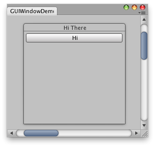

EditorWindow.EndWindows
public void EndWindows
();
Description
关闭由 EditorWindow.BeginWindows 开始的窗口组。

Simple editor Window with a window and a button inside.
// Create an editor window with a moveable Layout window. // This has a button which can be clicked and moved.
using UnityEditor; using UnityEngine; using System.Collections;
public class Example : EditorWindow { Rect windowRect = new Rect(10, 10, 110, 50);
[MenuItem("Example/EndWindows test")] static void InitWindow() { GetWindowWithRect(typeof(Example), new Rect(0, 0, 200, 100)); }
void OnGUI() { BeginWindows();
// All GUI.Window or GUILayout.Window must come inside here windowRect = GUILayout.Window(1, windowRect, DoWindow, "Hi There");
EndWindows(); }
void DoWindow(int windowID) { GUILayout.Button("Hi"); GUI.DragWindow(); } }
BeginWindows/EndWindows 对的位置决定了弹出窗口的显示位置；所有窗口都会裁剪到
由 GUI.BeginGroup 或 GUI.BeginScrollView 定义的裁剪区域。下面是该情况的一个小示例：

Simple editor window with a window and a button inside using scroll bars.
// The size of the window can be changed using X and Y scroll bars.
using UnityEditor; using UnityEngine; using System.Collections;
public class Example : EditorWindow { // The position of the window Rect windowRect = new Rect(10, 10, 210, 100);
// Scroll position Vector2 scrollPos = Vector2.zero;
[MenuItem("Example/EndWindows example")] static void InitWindow() { Example window = (Example)GetWindow(typeof(Example)); window.Show(); }
void OnGUI() { // Set up a scroll view scrollPos = GUI.BeginScrollView( new Rect(0, 0, position.width, position.height), scrollPos, new Rect(0, 0, 1000, 1000) );
// Same code as before - make a window. Only now, it's INSIDE the scrollview BeginWindows(); windowRect = GUILayout.Window(1, windowRect, DoWindow, "Hi There"); EndWindows();
// Close the scroll view GUI.EndScrollView(); }
void DoWindow(int windowID) { GUILayout.Button("Hi"); GUI.DragWindow(); } }